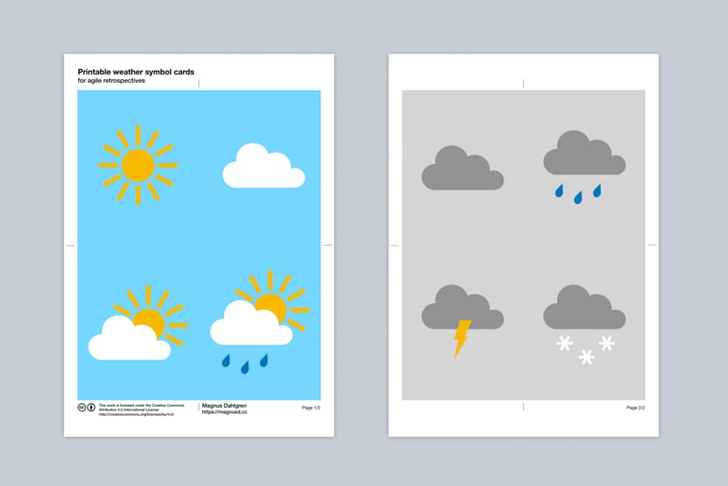

The more, the merrier, right? Well, not in Scrum.
Every time I’ve been working with a team bigger than the 3-9 people guideline, I’ve experienced how incredibly hard it can be to make Scrum work well in these conditions. And problems can start showing even with teams towards the higher end of what’s “allowed”!
In this post, I will share the top 5 reasons I’ve seen why smaller is better.
Read more

The sprint weather report is one of my favourites when it comes to agile check-in exercises for retrospectives. I used to run this exercise by printing each symbol on A4, put them up on the board and let people dot vote, but it always felt a bit wasteful to throw away the marked print outs at the end of each retrospective. I have therefore created some cards to use and reuse instead.
In case they are useful to anyone else, I’m posting them here on the blog as a free download.
Read more

A quick check-in exercise is a great way to start a retrospective. Not only does it help the group get warmed up and quickly get a feeling for how everyone feels the sprint went. It’s also a really useful tool for you as the facilitator, as a way to assess what’s going on. Is whatever plan you have for the rest of the retrospective the right one or do you need to do something different?
As a facilitator, it’s a good idea to have several different check-ins to choose from, so that you can keep your retrospectives varied and interesting. I will share my favourites in this article.
Read more
I used to blog quite a bit about Scrum and Agile a couple of years ago. My old blog is still there, in all its glory. But then I stopped. It wasn’t so much a conscious decision. Instead, it was just that the gap between posts grew. A week became a month, became a year, became two.
Recently, I have started to miss it, though. I enjoy writing and as someone who also enjoys reading about others’ experiences, it only seems right that I make the effort to share mine.
That’s why I’m starting blogging again today.
This time around, my intention is to try and focus on practices, techniques and actionable takeaways. As much as possible, the articles will be based on my own, first-hand experiences. Agile may be a mindset but at the end of the day, it’s how we apply that mindset that matters. It’s not through thinking, but through doing, we can be successful. Or learn along the way.
Welcome to Magnus’ Scrum Master blog, take 2!